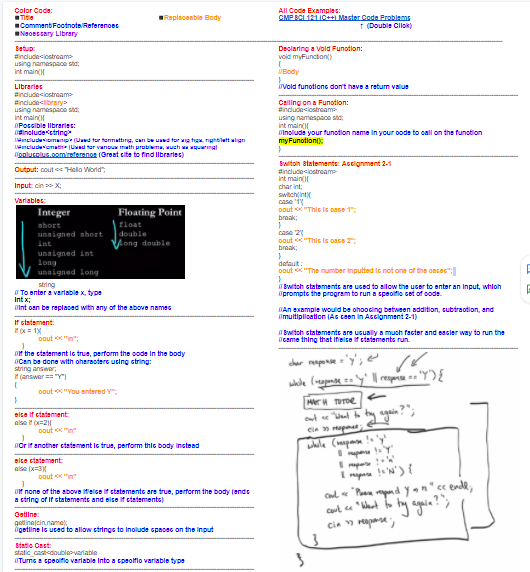
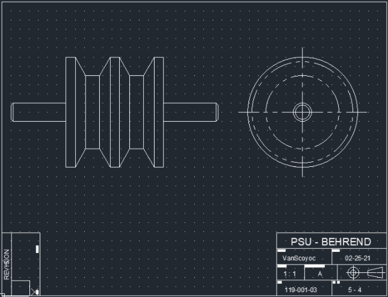
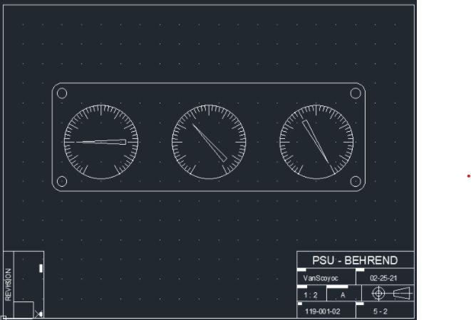

Veinless Property
This page contains my report on the horror game "Veinless Property".
GAME ENVIRONMENT
This game takes place solely in a small, dark house. The creator of this game does a
really good job of painting a creepy, eerie environment almost effortlessly and
minimalistically.
Your very first objective is to turn off all of the lights in the house before you go to bed.
While this is fairly straightforward, I feel it does a great job of smoothly allowing the
player to familiarize themselves with their environment, and also strongly adds to the
horror effect of the game. By turning off all of the lights, you are almost forced to wonder
"What's in the dark? What's coming after me?" and by giving almost no visual
stimulation, strictly auditory at parts, it forces your imagination and almost paranoia to
run wild.
The game is also entirely in black and red, which I find adds to the effectiveness of the
game and creates an interesting and unique art style that I honestly have never seen
before.
Overall I would say that the environment is one of the strongest components of this
game. I think it is very well done and speaks for itself without having to say much at all.
It's minimalist, creepy, and horrifying at times.
Below is an image that I feel captures the environment of the game and the creators
attention to small details that can have a huge effect on the player. As I was exploring
the environment I looked out one of the windows as it was the only source of light in the
area. While it's a really small detail that can be easily overlooked, I thought it was very
interesting and creepy that one of the mountains resembled a face

CHARACTERS
Just as the environment was very simple and minimalist, so too were the characters.
Little to nothing is known about the few characters in this game, but it appears you are
playing as a son/daughter who is home alone for a brief period of time. All in all, nothing
else is really know about the character that you play. Part of me wishes there was a little
more story involved in it, but part of me also enjoys the mystery and lack of known
information because it allows you to imagine the rest of the story.
The only other characters that are seen in this game are even less known about. At the
finale of the game, you meet the two creatures that have been making horrifying sounds
throughout the game (such as banging on your front door until you answer, crashing
and breaking in through a window, and breathing heavily that is audible through the
house).
These characters are extremely scary, horrifying creatures that are honestly difficult to
describe. They look skinny, and covered in blood.
Below is a picture of the only other two characters in the entire game:

OBJECTS
This game does actually use objects and objectives to keep everything flowing smoothly
and to add to the horror factor of it. There are a few notable objects that are used/seen
throughout the game, and the most distinct one would probably be the knife.
I remember this object the most because I can remember genuinely feeling a little
scared when I heard something break through a window in the other room, and a
message pops up that simply says: "find something to defend yourself". At this point I
was really scared that if I couldn't find something fast enough, the creatures would be
coming after me so I scrambled around looking for a weapon.
It was actually somewhat difficult to find the knife because the objective was very
unclear so I spent a decent amount of time scrambling through rooms looking for
anything that could be a weapon. Looking back I find this very interesting because I feel
like it almost recreates the actual feeling you would have if this had happened in real
life. Eventually you come across a knife in your kitchen, which you carry with you for the
remainder of the game.
Other than that, the only other objects really used or seen would be the lightswitches.
Again, these were mainly used at the start when you had to turn all of the lights off in
the entire house, but are seen more when more noises and disturbances occur
throughout the house.
Here are some images to capture the objects discussed above:
 
Challenges:
I would say one of the biggest challenges of the game would be the lack of direction. It
can feel almost disorienting at times, which sounds like a negative but I would honestly
argue that it was in the games benefit.
Both the lack of direction and the lack of visuals (as most of the game was extremely
dark and hard to see) really added to the horror of the game. It made me feel like I
wasn't really the one who was in control, it made me feel lost and scared of what was to
come next.
The lack of visuals was especially challenging, I feel almost like it was a little bit
unnecessary, as some parts I had to hunt through the pitch black to find the last light
switch that I need to turn off so my character can go to bed. While to a certain extent I
do believe it added to the game, eventually it did feel a little tedious.
The lack of direction is something I almost never see in video games, I'm not sure if the
effects were intentional or not but the feeling of being lost and not sure what's going on
made me significantly more afraid of what could be lurking through the house. I think
it'sa very interesting concept that I'm surprised not to see so much in other video
games, as most video games seem to give you very clear cut and easy to understand
objectives.
Final Thoughts:
All in all I did very much enjoy this game and thought that it brought some really
interesting and unique concepts to the table. My largest critique of the game is that I feel
it wasn't long enough, I started to feel immersed in the environment of the game and
was getting really interested where the story and game was heading, and I feel the
ending was a little to abrupt and left too many unanswered questions. However that
does not take away from the strong points of the game, the strongest of which I would
say was the environment, the art style, and the minimalist nature of the game that gave
room for the player's imagination.
My Kumo Network:
http://timemapper.okfnlabs.org/anon/8cnlwh-digit100-timemapstarter_ajv5401#10